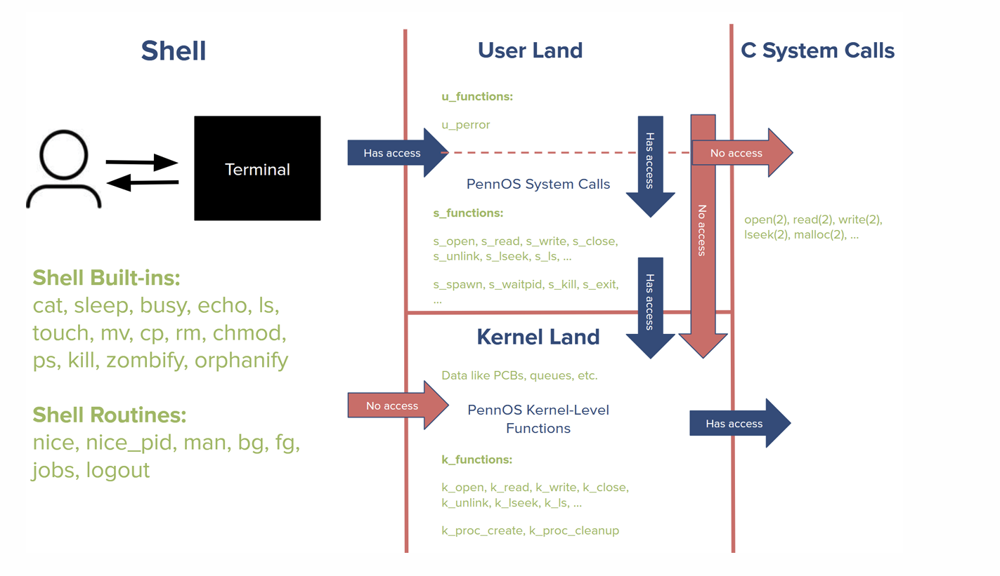
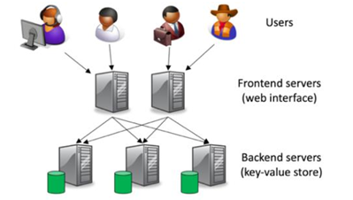

Penn Operation System
CIS 5480 Operating Systems Design and Implementations Course Project, UPenn
[code requested to be private]
[manual]
2025.06–08
- Developed a distributed multi-process cloud platform supporting user authentication, mail and storage service;
- Implemented front-end HTTP server with load balancer and communication with big table;

PennCloud Software System
CIS 5050 Software Systems Course Project, UPenn
[code requested to be private]
[report]
2025.02–05
- Developed a distributed multi-process cloud platform supporting user authentication, mail and storage service;
- Implemented front-end HTTP server with load balancer and communication with big table;